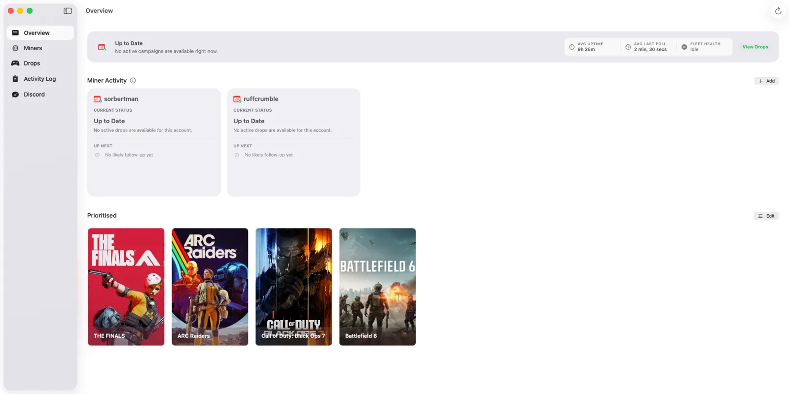
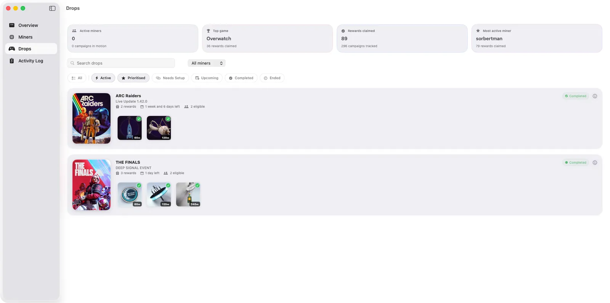

SwiftMiner organizes its features into a native macOS sidebar layout. You can switch between views instantly to manage your accounts, verify claim statuses, or troubleshoot connectivity issues.
Overview Dashboard
The Overview tab is your dashboard. It aggregates data from all connected miners and active campaigns into a single, clean overview. This is where you can quickly see what is currently being mined and how much time remains for your active Twitch rewards.

In the Overview tab, you will find:
- Active Campaigns: Visual cards representing the games you are currently farming. They show progress bars, estimated time to completion, and campaign end dates.
- Miners Summary: A quick listing of your Twitch accounts, showing which streamer each account is currently watching.
Miners Section
The Miners tab lists every connected account in detail. Here, you can control individual mining sessions, check the stream health, and see details about the current broadcaster.

Key information shown in the Miners tab:
- Status Indicator: Displays if the miner is
Running,Stopped, or requires attention (e.g.Needs Auth). If a miner requires action, a status badge will also appear on the sidebar navigation. - Broadcaster Details: The channel username, stream title, and current game being watched.
- Individual Controls: Buttons to start or stop specific miners. If you want to control all miners simultaneously, you can enable Sync Miner State in settings.
Drops Section
The Drops tab is a unified inventory showing all rewards associated with the campaigns SwiftMiner has processed or is currently processing.

Drops are divided into clean, filterable categories:
- In Progress: Rewards currently accumulating watch time.
- Claimable: Completed drops waiting to be claimed. If Auto-claim drops is disabled in settings, you can claim them manually here with a single click.
- Completed: A historical record of rewards successfully added to your Twitch inventories.
- Upcoming: Drops campaigns scheduled to begin in the future.
Activity Log
The Activity Log is a real-time console log translated into human-readable events. It tracks everything SwiftMiner does under the hood, making it the most important tool for understanding how the app is operating.

Use the Activity Log to:
- Verify when a miner automatically switches streams (e.g. if a streamer goes offline).
- See exact timestamps for completed claims and channel point bonuses.
- Check for warning conditions like Twitch API stalls or session expiries.
- Filter events by account or category (Claims, Switches, Errors, etc.), or export a redacted log file for debugging.